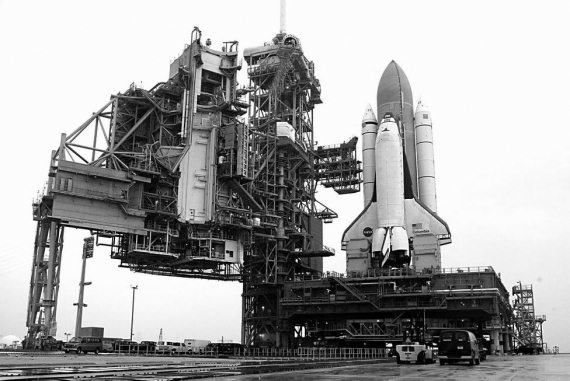
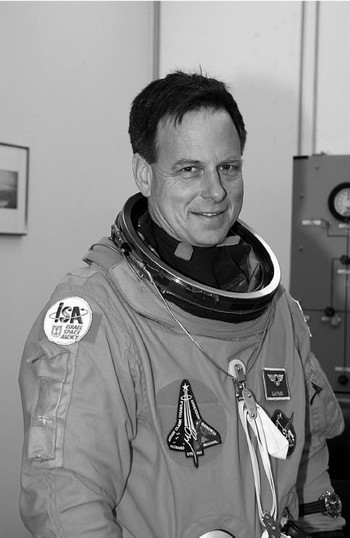
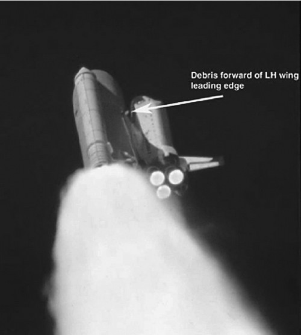
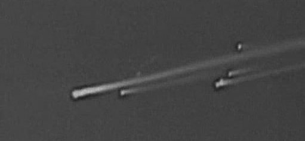
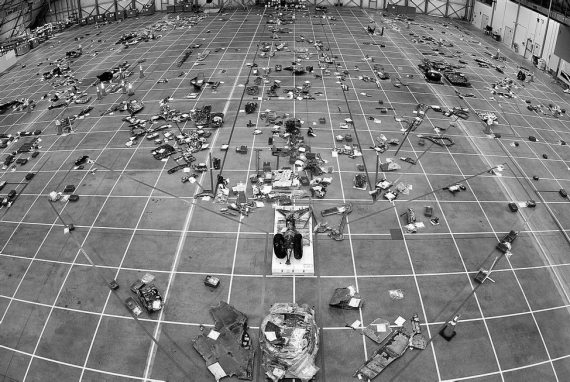
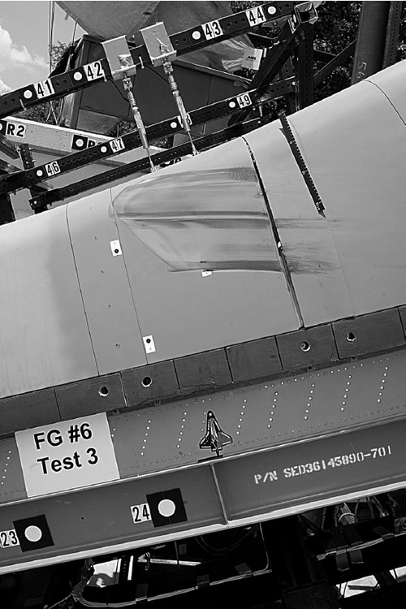
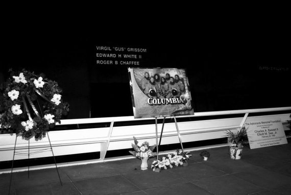

Гибель «Колумбии»
А теперь о второй катастрофе шаттла, которую отделяют от гибели «Челленджера» ровно семнадцать лет. Обе трагедии произошли почти день в день – 28 января погиб «Челленджер», 1 февраля – «Колумбия». А если вспомнить, что пожар на мысе Канаверал, в котором погиб экипаж «Аполлона-1», произошел 27 января, то можно увидеть какую-то зловещую цепь совпадений. Это благоприятная почва для всякого рода мистиков.
Катастрофа космического корабля «Колумбия» стала одним из самых значительных событий за всю историю освоения космического пространства. Связано это не только с количеством одновременно погибших космонавтов, но и с тем влиянием, которое было, а главное, еще будет оказано на мировую космонавтику.
Об этом я расскажу в конце данной главы, а пока рассказ о последнем полете «Колумбии», значившимся в графике как STS-107, но являвшимся 113-м рейсом шаттла. Наличие цифры «13» в номере впоследствии дало основание многим говорить, что экипаж был изначально обречен на гибель. О несчастьях, которые приносит американцам чертова дюжина, я уже писал в главе, посвященной полету «Аполлона-13».
В отличие от других кораблей многоразового использования, «Колумбия» не участвовала в программе строительства Международной космической станции. Связано это было с некоторыми техническими особенностями корабля. Самый первый челнок был значительно тяжелее всех остальных и просто не мог доставить на орбиту элементы конструкции станции, имевшие весьма внушительную массу. Чтобы не ставить корабль на прикол, в «эпоху МКС» его было решено использовать для автономных полетов по обслуживанию орбитального телескопа «Хаббл», для проведения научных исследований и экспериментов, а также для запуска уникальных космических аппаратов.
Первоначально полет с обозначением STS-107 должен был начаться еще 11 мая 2000 года. Однако график запусков шаттлов постоянно корректировался, в результате чего миссия «Колумбии» все время откладывалась. В какой-то момент ее вообще исключили из перечня, когда в НАСА было решено все силы бросить на сборку МКС. Но тут «взбунтовался» американский конгресс. Законодатели посчитали нежелательным намеренно создавать паузу в научных исследованиях в космосе и потребовали возобновления автономных полетов.
Запуск «Колумбии» вновь включили в график, но отсрочили до 11 января 2001 года. Далее была модернизация корабля на заводе компании «Боинг» в Калифорнии и новые переносы даты старта: сначала на 2 августа 2001 года, а потом на 4 апреля 2002 года.
Но и это было еще не все. По разного рода причинам, дата начала экспедиции плавно сместилась на 11 июля 2002 года. Но когда корабль был уже практически готов к старту, на другом шаттле – «Атлантисе» – в ламинизаторе потока в трубопроводе горючего основной двигательной установки была обнаружена микротрещина. Было принято решение проверить весь флот челноков. В последующие недели микротрещины были обнаружены и на других кораблях, в том числе и на «Колумбии» – в магистралях двигателя № 2.
Специалистам так и не удалось ни разобраться в причинах появления дефектов стенок трубопроводов, ни оценить, сколь они опасны для кораблей, поэтому весь флот шаттлов встал на прикол. На ремонт ушло несколько месяцев.
Следствием этого стала задержка полетов всех кораблей многоразового использования. Миссию «Колумбии», как менее приоритетную по сравнению с полетами «Атлантиса» и «Индевера» к МКС, отложили сначала до 29 ноября 2002 года, а потом еще дальше – до 16 января 2003 года.
На стартовой площадке корабль оказался лишь 9 декабря 2002 года и с этого момента начинается отсчет его последнего полета. Ровно через месяц на смотре летной готовности дата старта была подтверждена.
Надо отметить, что за несколько дней до этого в главной кислородной магистрали двигательной установки «Дискавери» был выявлен новый дефект, но «Колумбию» решили не проверять – проблема была незначительной, а в НАСА очень не хотели вновь откладывать предстоящую миссию, которой и так не везло слишком долго.
И вот, наконец, 16 января 2003 года в 15:39:00.075 по универсальному мировому времени, точно по графику, корабль стартовал из Космического центра имени Кеннеди на мысе Канаверал во Флориде.
После террористических атак 11 сентября 2001 года на Нью-Йорк и Вашингтон все запуски шаттлов сопровождались повышенными мерами безопасности, так как в НАСА всерьез опасались, что следующей мишенью террористов могут стать корабли многоразового использования. В случае с «Колумбией» эти меры были еще более ужесточены. В США полагали, что присутствие на борту израильского астронавта станет для экстремистов неким знаком, который заставит их сделать все возможное и невозможное, чтобы сорвать полет. Во избежание каких-либо нежелательных эксцессов, воздушное пространство в радиусе 50 километров от стартовой площадки объявили запретной зоной, и его патрулировали истребители ВВС США. Ограничили число гостей, которые могли наблюдать за стартом. Журналисты передвигались по территории космодрома только в сопровождении представителей пресс-службы центра имени Кеннеди.
Кто же знал в те минуты и часы, что даже самый жесткий контроль, самые совершенные меры безопасности не спасут тогда, когда в дело вступает ЕГО ВЕЛИЧЕСТВО СЛУЧАЙ. И то, что не удалось сделать террористам, может свершить небольшой кусочек пены.
Однако вернемся к старту. После включения двигателей корабля стартовую площадку окутало огромное облако дыма. Прошла секунда, другая и вот из этого облака вырывается махина шатлла, как будто стоящая на столбе огня. Еще мгновение и зрители видят, как, набирая скорость, корабль поднимается все выше и выше. Прошло еще немного времени и можно рассмотреть только ярко светящуюся точку где-то высоко в небе.

Шаттл «Колумбия» на старте
Спустя 8 минут 30 секунд корабль вышел на околоземную орбиту.
«Колумбию» пилотировал экипаж из семи человек. Командиром экипажа был Рик Дуглас Хазбанд (Rick Douglas Husband), пилотом Уильям Камерон МакКул (William Cameron McCool), специалистами полета значились Дэвид МакДауэлл Браун (David McDowell Brown), Калпана Чавла (Kalpana Chawla), Майкл Филлип Андерсон (Michael Phillip Anderson) и Лорел Блэр Кларк (Laurel Blair Clark). Израильский астронавт Илан Рамон (Ilan Ramon) являлся специалистом по работе с полезной нагрузкой. Для Хазбанда, Чавлы и Андерсона полет на «Колумбии» был вторым в их карьере. Все остальные впервые отправились в космос.
Как обычно, старт корабля многоразового использования снимали несколько телекамер, расположенных непосредственно на стартовом комплексе и вблизи него. Такое видеодокументирование позволяет увидеть различные отклонения от штатного режима выведения, если они возникают. Именно эти телекамеры и зафиксировали на восемьдесят второй секунде полета некий светлый объект в области передней стойки крепления орбитальной ступени к внешнему баку, который ударил левое крыло «Колумбии» неподалеку от передней кромки и разлетелся на мелкие кусочки.
Инцидент заметили, но детально рассмотреть картину происшедшего не удалось из-за низкого разрешения камер. Тем не менее в НАСА было проведено компьютерное моделирование возможных последствий, которое не выявило никакой угрозы для корабля и астронавтов. Расчеты велись на основании модели, созданной за десять лет до этого специалистами Югозападного научно-исследовательского института. Никто не мог даже представить, что эта модель не учитывает многих событий, которые могли произойти при старте корабля. Вероятность их была слишком мала, но именно так все и случилось. Обломок теплоизоляционного покрытия, сорвавшийся с внешнего топливного бака, со скоростью в несколько сот километров в час ударил по кромке левого крыла шаттла, образовав в обшивке дыру диаметром в полметра. Причем угол, под которым произошло соударение пены и корабля, лежал в тех пределах, которые не учитывались компьютерной моделью и, следовательно, сделанный на ее основании прогноз был далек от истинного положения вещей.
Уже после произошедшей трагедии американские журналисты составили обширную базу данных, в которую занесли около десяти тысяч случаев, когда куски теплоизоляции, оторвавшиеся от топливного бака, поражали корпуса кораблей многоразового использования. Причем в эту «картотеку» вошли результаты лишь восьмидесяти двух полетов.
Вот перечень десяти самых крупных инцидентов подобного рода, включая последний полет «Колумбии», с указанием того, как на них реагировало аэрокосмическое агентство США.

Первый израильский астронавт Илан Рамон
Август 1989 года. Корпус «Колумбии» получил удар куском пены размером с развернутую воскресную газету. По силе воздействия этот инцидент сравнивают с тем, что имел место 16 января 2003 года. После этого случая специалисты аэрокосмического агентства стали сверлить отверстия в пене, дабы уменьшить силу удара при соприкосновении.
Январь 1990 года. Кусок изоляции размером 30 на 60 сантиметров поразил обшивку «Колумбии» на взлете. В ответ НАСА отдало команду делать отверстия в пене еще глубже.
Декабрь 1990 года. Все та же «Колумбия» была поражена 147 кусками изоляции. Ущерб был минимальным, поэтому в аэрокосмическом агентстве посчитали принятых ранее мер достаточными.
Август 1991 года. При взлете «Атлантис» получил 131 удар по корпусу. Один из ударов привел к отрыву шести теплоизолирующих плиток – один из самых серьезных инцидентов подобного рода в истории полетов кораблей многоразового использования. Никаких мер не предпринималось, так как не удалось доказать (!), что именно пена стала причиной потери части покрытия.
Июнь 1992 года. Самое большое количество соударений с кусками теплоизоляции было зафиксировано при старте многострадальной «Колумбии». По крайней мере 28 кусков имели размеры 10 на 20 сантиметров. Специалисты НАСА после этого инцидента были вынуждены заняться усовершенствованием процесса нанесения изоляции на внешнем топливном баке.
Ноябрь 1997 года. «Колумбия» испытала соударение с 307 кусками изоляции, причем почти половина этих ударов оставила на теплозащитных плитках заметные следы. Специалистам НАСА опять пришлось заняться вопросами пеноизоляции. В частности, был изменен химический состав, наносимый в места стыков на внешнем топливном баке.
Декабрь 1999 года. Во время набора высоты «Дискавери» был 153 раза поражен кусками изоляции. Воздействие было незначительным, поэтому ничего нового в предстартовую подготовку шаттлов не внесли.
Май 2000 года. Во время выведения на орбиту «Атлантис» получил 113 ударов кусками изоляции. Один из них привел к появлению на теплозащитном покрытии корабля борозды длиной более 15 сантиметров. И вновь НАСА никак не прореагировало на инцидент.
Октябрь 2002 года. Зафиксирован удар большого куска пены по обшивке «Атлантиса». Никаких повреждений и, естественно, никаких мер.
Январь 2003 года. Обшивка «Колумбии» получила серьезные повреждения, ставшие для корабля фатальными.
Как я уже отметил, факт удара куска пены по обшивке корабля был задокументирован, и все, кто о нем знал, довольно бурно дискутировали на тему возможных последствий. Электронная переписка сотрудников НАСА по этому вопросу, опубликованная впоследствии, насчитывает несколько тысяч (!) страниц. Но ни в одной строке сотен писем, отправленных в период полета «Колумбии», нельзя найти категоричного утверждения о том, что шаттлу уготована гибель. Да, пытались оценить последствия удара, но никто даже не думал, что это завершится разрушением корабля на участке спуска.
Кстати. Большой ажиотаж в средствах массовой информации впоследствии вызывал вопрос: «Знали астронавты о повреждении крыла или нет?». Как показало проведенное расследование, экипаж был проинформирован об инциденте на старте. Но никаких особых предостережений о возможных последствиях на борт не передавалось. Были сообщены только результаты компьютерного моделирования, которые беды не предвещали.
Итак, «Колумбия» была смертельно ранена уже на восемьдесят второй секунде своего полета. Но пройдет еще более двух недель, прежде чем ей предстоит испытать агонию. А пока она благополучно вышла на орбиту, и астронавты приступили к своей работе.

Злополучный кусок пены
Все шестнадцать дней своего полета астронавты занимались проведением научных исследований, которые и являлись главной целью их миссии. Программа работ включала в себя эксперименты в области космической биологии и медицины, космической физики и физики Земли, материаловедения и физики горения и так далее. Всего в этом перечне было более сотни позиций, причем около восьмидесяти экспериментов считались основными. Их подготовили не только космические агентства США и Израиля, но и Европейское космическое агентство, космические агентства Германии, Канады, Японии, а также в частные фирмы.
Большинство из этих работ интересны лишь специалистам, поэтому я не буду их перечислять, а тем более подробно рассказывать о каждой из них. Разве что упомяну израильский эксперимент MEIDEX (сокращение от Mediterranean Israeli Dust Experiment – Средиземноморско-израильский пылевой эксперимент), целью которого было определение оптических, физических и химических характеристик аэрозолей – частиц пыли, плавающих в атмосфере региона Средиземноморья и Ближнего Востока, источников их возникновения и путей распространения. Последующий анализ собранной информации и сравнение ее с результатами аналогичных измерений с Земли и с самолета были необходимы для того, чтобы понять механизм влияния пылевых аэрозолей на возникновение облаков, дождя, изменение состояния атмосферы и формирование погоды в целом.
Естественно, что эксперимент проводился находившимся на борту израильским астронавтом Иланом Рамоном. В его задачу входило наблюдение за подстилающей поверхностью, обнаружение и идентификация выбросов пыли, уточнение их местоположения и объема взвешенного материала, фотосъемка.
Мое внимание этот эксперимент привлек не столько своими результатами, сколько составом группы специалистов из Тель-Авивского университета, участвовавших в его подготовке. Там оказалось немало выходцев из СССР и России. Например, одним из трех главных руководителей проекта был доктор Юрий Меклер, которого в 1971 году в Москве осудили за «пропаганду сионизма», а после освобождения из тюрьмы отправили на историческую родину. Другой выходец из России – доктор Давид Штивельман – руководил «авиационной стороной» эксперимента. В группу также входили выпускник Московского физико-технического института, бывший сотрудник Института космических исследований Петр Исраэлевич и бывший сотрудник Гидрометеоцентра Шимон Кричак. Были и другие бывшие наши соотечественники.
Орбитальный полет космического корабля «Колумбия» прошел на удивление гладко. Не возникло никаких проблем, которые могли быть истолкованы как предвестник беды. Правда, были зафиксированы два инцидента, один из которых впоследствии все-таки связали с повреждениями обшивки, полученными на старте. Но это будет сделано потом, уже после аварии.
На вторые сутки полета наземные службы наблюдения за космическим пространством зафиксировали в непосредственной близости от корабля небольшой неизвестный объект размером 30 на 40 сантиметров. Через три дня этот кусочек благополучно сошел с орбиты и сгорел в плотных слоях земной атмосферы. Что это было, и был ли это фрагмент обшивки «Колумбии», а может кусочек другого космического аппарата, оказавшийся «в нужное время, в нужном месте», так и останется неизвестным. Некоторые специалисты полагают, что был замечен осколок льда, выпавший из отверстия для сброса отработанной воды. Но большинство все-таки уверены, что от корпуса шаттла оторвался кусочек плитки, разрушенной во время инцидента при старте.
Комиссия, выяснявшая причины катастрофы, довольно много внимания уделила оторвавшемуся фрагменту, но так и не пришла к какому-то определенному выводу. Хотя этот неопознанный кусочек очень хорошо вписывается в общую картину аварии. Но это лишь предположение, поэтому нет смысла акцентировать на нем внимание, как на любом недостоверном событии.
Другой инцидент относился к категории «рабочих» неприятностей, случавшихся в большинстве других полетов шаттлов. В ночь на 20 января в модуле «Спейсхэб» (Spacehab) произошла утечка воды из подсистемы, входящей в его систему жизнеобеспечения и предназначенной для сбора и распределения атмосферного конденсата. Протекающий осушитель пришлось отключить. Второй осушитель продолжал работать без замечаний до того момента, когда в нем произошел скачок электрического тока. Таким образом, оба осушителя оказались неработоспособны. Ничего страшного не произошло. Астронавты слегка изменили конфигурацию клапана в кабине «Колумбии», что позволило прохладному воздуху с корабля идти в научный модуль.
Ну а в остальном все прошло хорошо, без существенных замечаний. Все шестнадцать дней средства массовой информации уделяли полету «Колумбии» очень мало внимания. Даже пресс-служба Космического центра имени Джонсона «поленилась» выпускать сообщения о полете дважды в сутки, как делала во время предыдущих миссий. Так было всегда, когда не происходило ничего сверхординарного. Зато после катастрофы СМИ с лихвой компенсировали этот пробел.
Утром 1 февраля экипаж начал готовиться к возвращению на Землю. Погода в районе мыса Канаверал была неустойчивой, и до последнего момента оставалось неясно, где будет садиться «Колумбия»: во Флориде или в Калифорнии. Астронавты уже надели скафандры, разместились в креслах, а наземные службы все никак не могли определиться. Наконец было решено, что лучше сесть на восточном побережье, тем более что ночная низкая облачность ушла, сильный ветер стихал и погода явно улучшалась. Произошло это за шесть минут до расчетного времени.

Последний полет» Колумбии»
Тормозные двигатели были включены в 16 часов 15 минут 30 секунд (здесь и далее московское время) на высоте 283 километра, когда корабль находился над Индийским океаном. За 158 секунд скорость «Колумбии» уменьшилась на 79 метров в секунду и шаттл устремился вниз.
Спустя 20 минут после выхода корабля на посадочную траекторию случилось небольшое происшествие, которое, на мой взгляд, стало «последней каплей» для шаттла и сделало его гибель неизбежной.
Подчеркну, что это моя точка зрения, которая даже теоретически не рассматривалась экспертами.
Итак, что же произошло в 16 часов 36 минут 45 секунд, когда корабль находился на высоте более 160 километров и лишь касался верхних слоев атмосферы. В этот момент был зафиксирован неожиданный переход из автоматического режима снижения на ручной. Что стало причиной этого, неизвестно. Полагают, что либо Рик Хазбанд, либо Уильям МакКул случайно задел тумблер и перевел корабль на ручное управление. Как только это было обнаружено, тумблер вернули в нормальное положение, и снижение продолжалось в автоматическом режиме.
Тем не менее «Колумбия» успела-таки совершить небольшой маневр, изменивший характер внешнего воздействия на обшивку. Динамические нагрузки на корпус были невелики, но они были. И, если корабль действительно был поврежден на взлете, вполне могло случиться так, что неожиданное увеличение перегрузок, даже незначительное, могло еще больше повредить корпус и образовать ту щель, в которую потом и ворвался поток раскаленного газа.
Мне кажется, что не будь этого непроизвольного маневра, все могло закончиться благополучно, и шаттл совершил бы посадку. Конечно, это предположение ничем не подкреплено, но есть же такое чувство как интуиция. Вот оно-то и подсказывает мне, что именно переход на ручное управление и решил все, сделав гибель астронавтов неизбежной.
В 16 часов 44 минуты 9 секунд корабль вошел в атмосферу. До космодрома оставалось 30 минут полета и 8 тысяч километров расстояния.
Посадка «Колумбии» отслеживалась не только специалистами, но и электронными средствами массовой информации, поэтому можно утверждать, что происшедшая катастрофа была первой, которую жители Земли видели в прямом эфире. Именно через Интернет большинство землян узнало о трагедии. И было это еще до того, как факт гибели корабля зафиксировали специалисты Центра управления полетом в Хьюстоне. Да и телевидение стало показывать кадры распада корабля на несколько минут позже, чем это случилось во Всемирной паутине.

Все, что осталось от «Колумбии»
Первые признаки каких-то неисправностей (повышение температуры внутри крыла шаттла, падение давления в шинах и тому подобное) начали фиксироваться в 16 часов 55 минут. Аномальные показания датчиков не остались незамеченными, но отреагировать на них ни на борту, ни на Земле толком не успели. Специалисты пытались понять, что происходит. Но никто из них в тот момент еще даже не мог подумать о худшем.

Такие повреждения «Колумбия» могла получить на взлете
А в 16 часов 59 минут 22 секунды в Центре управления полетом в Хьюстоне перестали получать телеметрическую информацию в реальном масштабе времени. Сбой списали на неустойчивую связь с кораблем. Но именно в этот момент и началось разрушение обшивки корабля.
Спустя 10 секунд через треск помех в эфире раздался голос Рика Хазбанда: «Прием…ба…». Это были последние слова, которые услышали в Хьюстоне. Вскоре наблюдатели на Земле увидели, как «Колумбия» распадается на куски. Как показало расследование, разрушение корабля произошло в 17 часов 5 секунд.
И хотя весь мир уже знал о происшедшей трагедии, в Центре управления полетом еще долгих десять минут пытались установить связь с экипажем. И лишь в 17 часов 12 минут 55 секунд руководитель полета Лерой Кейн (Leroy Cain) произнес: «Закройте двери». Эти слова на сленге специалистов означали, что все сотрудники Центра управления полетом должны остаться на своих рабочих местах и подготовить материалы по полету «Колумбии» для отчета. В Хьюстоне поняли, что корабль погиб.
Сразу же после того, как факт гибели «Колумбии» был подтвержден, возник естественный вопрос: «Почему это случилось?». Было выдвинуто множество версий: от вполне правдоподобных до нереальных и даже абсурдных.
В процессе расследования большинство из них было отвергнуто, но все равно приведу их полный перечень, так как это, во-первых, позволяет окунуться в атмосферу тех часов, а во-вторых, представляет определенный интерес.
Акт терроризма.Это самая первая возникшая версия. Право на жизнь ей давали события, которые происходили в последние годы в различных уголках земного шара, и, в первую очередь, нападение на Нью-Йорк и Вашингтон 11 сентября 2001 года. Мир до сих пор живет в страхе перед возможностью повторения случившегося. Поэтому первая реакция и была – «Сбили!». К тому же на борту находился первый израильский астронавт, что делало космический корабль желанной мишенью для террористов.
Конечно же, осуществить такое невозможно. Ни одна террористическая организация, к счастью, пока не располагает оружием, способным уничтожить космический аппарат на высоте более 60 километров, да еще и летящий со скоростью более 5 километров в секунду. Да и государств, обладающих такими возможностями, не так уж много. Но версия рассматривалась вполне серьезно. И была отвергнута.
Диверсия.Это был более реальный вариант происшедшего. Например, завербованный или внедренный агент заложил взрывное устройство в корабль во время предполетной подготовки. Или серьезно повредил жизненно важную систему.
Такое могло произойти, тем более что с кораблями многоразового использования на Земле работает множество людей из НАСА и фирм-подрядчиков. И несмотря на все меры безопасности, среди них могли оказаться такие, которым у кораблей было не место. Уже после катастрофы, тщательно фильтруя свои кадры, служба безопасности Космического центра имени Кеннеди выявила несколько десятков сотрудников, в основном из вспомогательных служб, не имевших необходимого допуска к работе на космодроме, и даже нелегальных иммигрантов. Всех их, естественно, уволили. Но это произошло позже.
Так что вариант с диверсией теоретически был возможен, его тщательно исследовали, но подтверждения не нашли. Уже в первый день расследования выяснилось, что аварийная ситуация развивалась постепенно, что никак не стыкуется с вероятным подрывом корабля. В дальнейшем эксперты пришли к выводу, что все системы корабля в момент старта были работоспособны и полностью исправны.
Кусок пены.О куске пеноизоляции, оторвавшемся от внешнего топливного бака на восемьдесят второй секунде полета, как о причине трагедии, заговорили спустя два-три часа после взрыва в небе над Техасом. Телеканал Си-Эн-Эн продемонстрировал видеозапись старта и акцентировал свое внимание именно на этом инциденте. Однако представители НАСА категорически отвергли эту версию, и отвергали ее в течение нескольких месяцев, пока эксперименты в Юго-западном научно-исследовательском институте однозначно не подтвердили, что именно пена является наиболее реальной причиной происшедшего.
Подробно об инциденте на старте я уже писал. Добавлю только, что данная версия стала одной из первых, прозвучавших в день катастрофы, и осталась единственной к моменту завершения следствия.
Компьютерный вирус.Данная версия появилась из-за некомпетентности некоторых средств массовой информации. Услышав, что один из каналов передачи информации между «Колумбией» и Центром управления полетом в Хьюстоне был в порядке эксперимента организован с использованием интернет-технологий, они тут же поспешили сделать вывод: занесли вирус! Или другой вариант – хакеры постарались.
Комиссия, которая выясняла все обстоятельства катастрофы космического корабля, никогда всерьез не занималась изучением этой версии, понимая ее нереальность.
Сами сбили.Эта версия впервые появилась на сайте Angel-Fire («Ангельский огонь»), а потом с большим удовольствием была перепечатана рядом российских изданий, таких как «Дуэль» и «Советская Россия». Кое-кто всерьез полагал, что в день посадки «Колумбии» проводились испытания некоторых элементов перспективной системы противоракетной обороны, а именно – нагревного стенда HAARP на Аляске. Садящийся шаттл использовался в качестве учебной цели.
Версия абсурдна. Никто и никогда не использовал пилотируемые корабли для таких целей. Это во-первых. Ну а во-вторых, провести в секрете такое испытание в принципе невозможно. Это было бы зафиксировано техническими средствами, и не только российской разведкой, но и астрономическими приборами многих обсерваторий мира.
Атака инопланетян.Была и такая версия, ничем не хуже любой другой из разряда бредовых. Но здесь, как говорится, без комментариев.
Серьезный отказ бортовых систем.Возвращение корабля с орбиты происходило в довольно жестких условиях по аэродинамическим и тепловым нагрузкам. При этом аппарат полностью зависел от работы бортовых управляющих компьютеров. Многие системы корабля относятся к критическим, то есть отказ любой из них приводит к гибели.
Однако принятые с борта данные не подтвердили, что какая-то система вышла из строя и стала причиной аварии.
Усталость металла.Не исключалась и версия того, что за 24 года эксплуатации в конструкции корабля произошли такие изменения, которые стали причиной разрушения, либо усугубили ход аварии. Высказывалось предположение, что металл мог за такой срок утратить часть своих свойств, и каркас просто не выдержал запредельных нагрузок. На это указывали и многочисленные проблемы, которые сопровождали флот шаттлов в последние годы (следы коррозии, микротрещины и тому подобное).
Следствие не выявило никакой связи между усталостью конструкции и катастрофой, но рекомендовало провести тщательное исследование изменений свойств металла с течением времени.
Специфические особенности «Колумбии». Корабли многоразового использования строились по одним чертежам и считаются идентичными. Тем не менее каждый из них имеет свои особенности, свою специфику, которая определяет поведение аппарата при возвращении с орбиты. В истории шаттлов уже были случаи, когда посадка происходила на грани возможного.
Комиссия по расследованию не нашла ничего необычного в последней посадке «Колумбии». По мнению экспертов, не это стало главным в развитии аварийной ситуации.
Неблагоприятное сочетание допустимых отклонений.В технике широко используется понятие допуска. Параметры каждого узла корабля, каждой системы работают в определенных пределах, когда гарантируется их надежность. Но на шаттлах таких систем сотни и тысячи. А что, если отклонения параметров от допустимых пределов «наложатся» друг на друга и какая-то система окажется выведенной из строя? Такое могло случиться и с «Колумбией». Но, судя по всему, в последнем полете шаттла ничего подобного не произошло.
Человеческий фактор.Грешили и на ошибочные действия кого-то из членов экипажа. Ну, там, не ту кнопку нажал, не тот тумблер включил. Легче всего списать катастрофу на погибших астронавтов, которые не могут оправдаться. В принципе, этого исключить нельзя. Вспомните хотя бы неожиданный переход на ручное управление вскоре после схода с орбиты. На этом событии я уже акцентировал внимание и по-прежнему считаю его «последней каплей» для развития аварийной ситуации. Тем не менее человеческий фактор нельзя считать основной причиной трагедии. Не будь злополучного куска пены, никакие кратковременные отклонения от запланированного режима посадки не привели бы к катастрофе.
Удар метеорита или объекта искусственного происхождения.Эта версия возникла после того, как стало известно об отделении на вторые сутки полета от корпуса «Колумбии» некоего фрагмента. Его появление связывали с различными причинами, в том числе и с возможным ударом метеорита или какого-то объекта искусственного происхождения, которые в изобилии кружат над планетой.
Предположение о внешнем воздействии на обшивку шаттла было очень удобно для американского аэрокосмического управления. В этом случае никаких претензий к НАСА не могло быть. В этом случае не надо было бы прекращать полеты шаттлов. В этом случае экономились бы значительные средства. Но своего подтверждения данное предположение не нашло.
Солнечная активность.Авторами этой версии стали российские ученые из Института земного магнетизма, ионосферы и распространения радиоволн (ИЗМИРАН) К. А. Боярчук, Г. С. Иванов-Холодный и О. П. Коломийцев. Они связали события 1 февраля с магнитной бурей двумя днями раньше. Действительно, в день посадки потоки высокоэнергетичных электронов были значительно сильнее, чем в предыдущие дни и могли повлиять на работу бортовых систем «Колумбии», особенно тех, которые обеспечивали выполнение команд по маневрированию при входе в атмосферу.

Памяти экипажа «Колумбии»
Соответствующая информация была направлена в США, но нет никаких данных о том, насколько серьезно к ней отнеслись американские специалисты и рассматривали ли ее вообще. Но такая версия была.
Все прочие версии являются вариациями на уже озвученные предположения, поэтому я не буду их приводить. Скажу только, что при расследовании большинство из них было тщательно изучено. Даже самые абсурдные.
Большая часть предположений о причинах гибели «Колумбии» была озвучена еще до того, как сформировалась группа экспертов, которая могла бы их оценить и проанализировать. Расследовать обстоятельства катастрофы было поручено независимой комиссии, во главе которой встал отставной адмирал Гарольд Геман. Надо отдать должное всем специалистам, которые в течение полугода денно и нощно трудились, чтобы найти истину. Конечно, это обошлось американским налогоплательщикам в довольно кругленькую сумму – полмиллиарда долларов, но дело того стоило.
Скрупулезное изучение всех данных позволило не только восстановить картину происшедших событий, но и с большой долей вероятности установить, что именно обломок пены, ударивший в обшивку, стал началом тех процессов, которые, в конечном счете, стали причиной аварии.
Но комиссия Гемана назвала и еще одну причину трагедии – плохую организацию работ в аэрокосмическом управлении. Причем в итоговом отчете именно на это было обращено основное внимание.
Комиссия сформулировала основные рекомендации, которые необходимо реализовать для того, чтобы сделать последующие полеты шаттлов безопасными. С большим трудом, но большая часть рекомендаций была выполнена, и в 2005 году полеты челноков были возобновлены. Возобновлены, чтобы вскоре завершиться навсегда.
Я уже упоминал, что эра шаттлов близка к завершению. От них решено отказаться как от аппаратов безумно дорогих, сложных и ненадежных.
И все-таки космонавтика не стоит на месте. Она живет и развивается. И даже такие масштабные трагедии, как гибель «Колумбии», не могут остановить поступательное движение вперед.